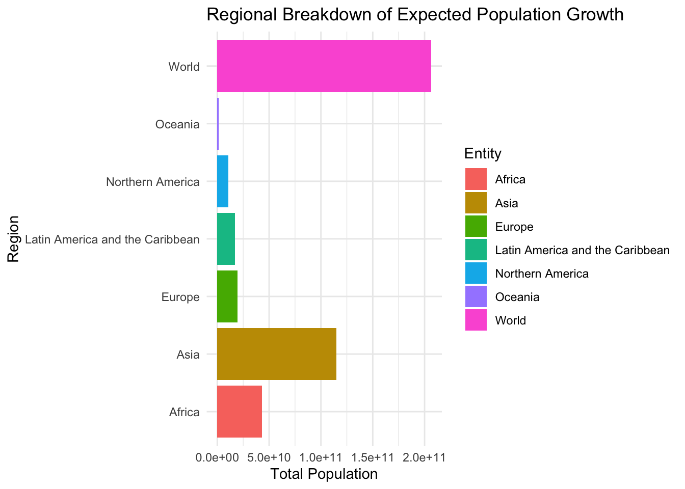

Expected Population Growth (Inspired by TidyTuesday dataset)
Data Visualization
Statistical Analysis
Data Science
Data Analysis
Interactive Analytics
This analysis examines the total figures for the global population, focusing on how the size of the population is expected to evolve in different regions and countries of the world.
Loading required package: timechange
Attaching package: 'lubridate'
The following objects are masked from 'package:base':
date, intersect, setdiff, union
Show the code
library(skimr)library(survival)library(survminer)
Loading required package: ggpubr
Attaching package: 'survminer'
The following object is masked from 'package:survival':
myeloma
Show the code
library(plotly)
Attaching package: 'plotly'
The following object is masked from 'package:ggplot2':
last_plot
The following object is masked from 'package:stats':
filter
The following object is masked from 'package:graphics':
layout
Show the code
library(DT)# Load the datathePath <-"/Users/cordarrylhall/CorDarryl Hall Data Portfolio/CorDarryl Hall Data Portfolio"ds <-read_csv(paste(thePath, "Projections-of-the-world-population-until-2100-by-the-Wittgenstein-Centre.csv", sep="/"))
Rows: 189 Columns: 4
── Column specification ────────────────────────────────────────────────────────
Delimiter: ","
chr (2): Entity, Code
dbl (2): Year, PopulationTotal_SSP2
ℹ Use `spec()` to retrieve the full column specification for this data.
ℹ Specify the column types or set `show_col_types = FALSE` to quiet this message.
# A tibble: 6 × 4
Entity Code Year PopulationTotal_SSP2
<chr> <chr> <dbl> <dbl>
1 Africa <NA> 1970 368002720
2 Africa <NA> 1975 420166976
3 Africa <NA> 1980 482569664
4 Africa <NA> 1985 553231936
5 Africa <NA> 1990 634977088
6 Africa <NA> 1995 720581760
Show the code
skim(ds)
Data summary
Name
ds
Number of rows
189
Number of columns
4
_______________________
Column type frequency:
character
2
numeric
2
________________________
Group variables
None
Variable type: character
skim_variable
n_missing
complete_rate
min
max
empty
n_unique
whitespace
Entity
0
1.00
4
31
0
7
0
Code
162
0.14
8
8
0
1
0
Variable type: numeric
skim_variable
n_missing
complete_rate
mean
sd
p0
p25
p50
p75
p100
hist
Year
0
1
2035
3.90500e+01
1970
2000
2035
2070
2100
▇▇▇▇▇
PopulationTotal_SSP2
0
1
2184638392
2.72418e+09
19334460
425366016
737849088
3680742912
9397164032
▇▁▂▁▁
Key Insights
Population Growth by Region: Different regions are expected to experience varying rates of population growth.
Top Growing Regions: Identify the regions with the highest expected population growth.
Distribution of Population Growth: Understanding the distribution and density of expected population growth across different regions.
Interactive Boxplot of Expected Population Growth by Region
Show the code
# Interactive boxplotplot_ly(ds, x =~Entity, y =~PopulationTotal_SSP2, type ='box', name ='Population') %>%layout(title ="Expected Population Growth by Region",xaxis =list(title ="Region"),yaxis =list(title ="Population"))
Expected Population Growth by Region (Histogram)
Show the code
# Histogram of expected population growthp <- ds %>%ggplot(aes(x = PopulationTotal_SSP2, fill = Entity)) +geom_histogram(color ="black", bins =20) +ggtitle("Expected Population Growth by Region") +facet_wrap(. ~ Entity) +theme_minimal()ggplotly(p)
Trend Analysis: Population Growth Over Time
Show the code
# Line plot for population growth over timetrend_plot <- ds %>%ggplot(aes(x = Year, y = PopulationTotal_SSP2, color = Entity)) +geom_line() +ggtitle("Population Growth Over Time by Region") +xlab("Year") +ylab("Population") +theme_minimal()ggplotly(trend_plot)
Comparative Analysis
Show the code
# Compare population growth in top regionstop_regions <- ds %>%group_by(Entity) %>%summarize(Total_Population =sum(PopulationTotal_SSP2)) %>%arrange(desc(Total_Population)) %>%head(10)datatable(top_regions, options =list(pageLength =5, autoWidth =TRUE))
Detailed Analysis
Show the code
# Regional breakdown plotregional_breakdown <- ds %>%ggplot(aes(x = Entity, y = PopulationTotal_SSP2, fill = Entity)) +geom_col() +coord_flip() +ggtitle("Regional Breakdown of Expected Population Growth") +xlab("Region") +ylab("Total Population") +theme_minimal()print(regional_breakdown)

Conclusion
The analysis provides insights into the expected population growth across various regions and countries. By leveraging interactive visualizations, trend analysis, and comparative studies, we can better understand the global population dynamics and prepare for future demographic shifts.
Feel free to explore the interactive elements and delve deeper into the analysis